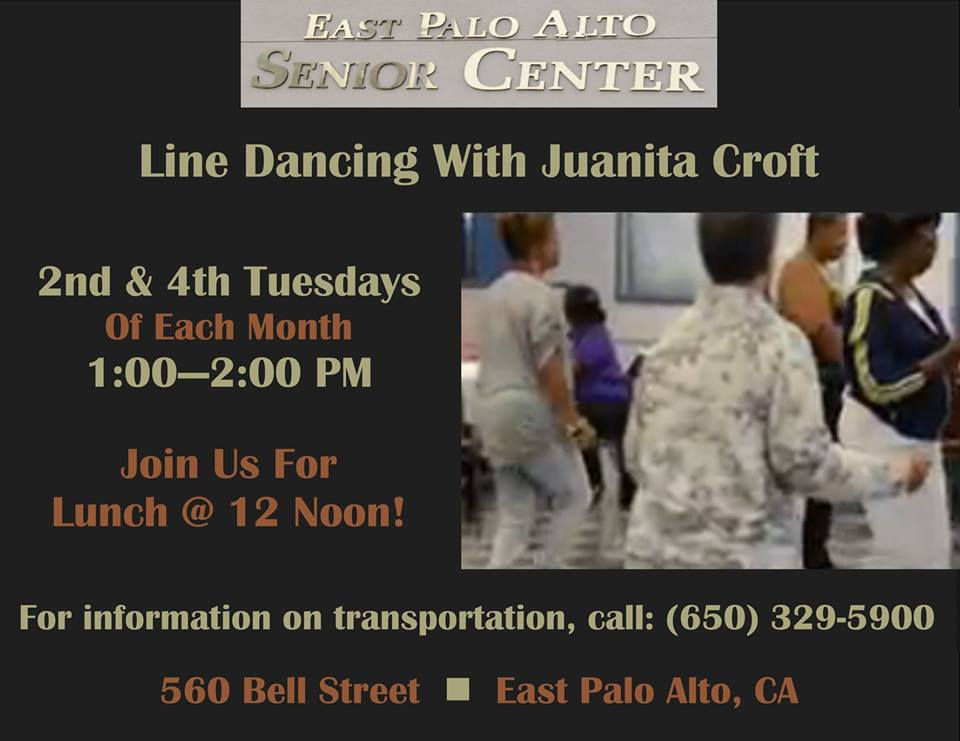

Community Services
The staff and volunteers provide information about resources
in such areas as housing, employment, household help,
recreation, financial assistance, health services and in-home help.
Health education and screenings are provided at the
East Palo Alto Senior Center.

Classes

Line dancing classes with Juanita Croft
are offered on the 2nd and 4th Tuesday of each month.To watch seniors get down, click here!
Come early and Join us for lunch @12 noon!
For information on transportation to the senior center,
please call 650-329-5900
Meal Services

meal services are offered on-site;
M - F continental breakfast 9am $.50; lunch 11:30 - 12:30
$3 seniors; $6 under 60.
Join us on Thursdays country breakfasts and box lunches!
For more information about our hot lunch service
in the dining room you can call 650-688-1824.We welcome volunteers and donations to the meal services program!
Join us for the next crab feast!Transportation
Palo Alto Shuttle Service
The City of Palo Alto's Shuttle is free and open to everyone.
All shuttles are wheelchair accessible but wheelchairs must have a working brake system.
Shuttles are also equipped with bicycle racks on the exterior of the vehicle and can accommodate up to two conventional bicycles.
Shuttle stops are marked with a "Palo Alto Shuttle" sign, a sticker on a regular VTA bus stop sign, or a Shuttle decal on a stop sign pole in residential areas
Real time shuttle information
You can now check the shuttle location for Crosstown and East Palo Alto routes in real-time on your smartphone by downloading the free mobile app.
Search for "DoubleMap" in your smartphone's app store. If you don't have a smartphone, you can also view it online in an interactive map by clicking this link.
Checkout this video of our seniors visit to the Giants Trophies on the shuttle!For more information on transportation to the senior center,please call 650-329-5900